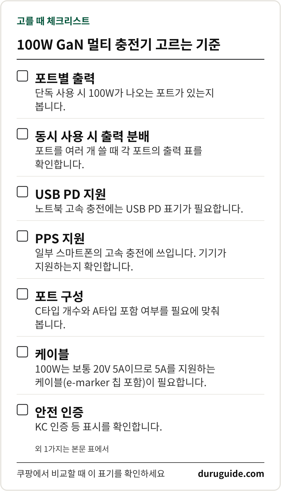

100W GaN 멀티 충전기 고르는 기준
안 사도 되는 경우
케이블이나 포트의 먼지, 콘센트, 충전 제한 설정 문제였다면 충전기를 바꾸지 않아도 돼요. 지금 충전기 라벨의 출력부터 확인해 보세요.
이런 상황이죠
노트북, 태블릿, 스마트폰을 각각 다른 충전기로 충전하다 보니 가방이 무겁고 콘센트도 모자란 상황입니다. 100W급 GaN 멀티 충전기 하나로 정리하려는데, 제품마다 표기가 달라서 무엇을 봐야 할지 막막할 수 있습니다.
왜 생기나
고민이 생기는 이유는 표기 때문입니다.
- 100W는 대개 최대 출력입니다. 포트가 여러 개이면 포트마다 나오는 전력이 다릅니다.
- 포트를 동시에 쓰면 총 출력이 나뉘어서, 노트북 포트가 100W보다 낮게 줄어드는 경우가 많습니다.
- GaN은 질화갈륨 소재를 쓴 충전기를 뜻합니다. 같은 출력에서 크기를 줄이기 쉽다는 특성이 있지만, 소재 이름만으로 성능을 알 수는 없습니다.
- 충전 속도는 충전기만이 아니라 케이블과 기기가 모두 맞아야 나옵니다.
충전기를 새로 사도 속도가 안 나오는 경우는 케이블이나 기기 쪽 제한이 원인인 경우가 있습니다.
사기 전에 먼저 해볼 것
비용 없이 확인할 것이 있습니다.
- 지금 쓰는 노트북 충전기의 라벨에서 출력(W)과 전압·전류(V, A)를 확인합니다. 어느 정도의 전력이 필요한지 알 수 있습니다.
- 스마트폰, 태블릿 등 같이 충전할 기기의 필요 전력도 정리합니다.
- 케이블을 바꿔 봅니다. 충전 속도가 느리면 케이블 문제일 수 있습니다.
- 케이블 포트에 먼지나 이물질이 있으면 이쑤시개 같은 비금속 도구로 조심스럽게 제거합니다.
- 다른 콘센트나 멀티탭에 꽂아 봅니다.
- 기기 설정에서 배터리 충전 제한 설정이 걸려 있는지 확인합니다.
충전기가 지나치게 뜨겁거나 케이블이 부풀었거나 타는 냄새가 나면 즉시 사용을 중단합니다. 배터리 화재의 원인이 될 수 있습니다. 인증 표시가 불분명한 저가 제품은 피하는 편이 안전합니다.
고를 때 체크리스트
사기 전에 제품 표기에서 확인할 것입니다.
| 확인할 것 | 이유 |
|---|---|
| 포트별 출력 | 단독 사용 시 100W가 나오는 포트가 있는지 봅니다. |
| 동시 사용 시 출력 분배 | 포트를 여러 개 쓸 때 각 포트의 출력 표를 확인합니다. |
| USB PD 지원 | 노트북 고속 충전에는 USB PD 표기가 필요합니다. |
| PPS 지원 | 일부 스마트폰의 고속 충전에 쓰입니다. 기기가 지원하는지 확인합니다. |
| 포트 구성 | C타입 개수와 A타입 포함 여부를 필요에 맞춰 봅니다. |
| 케이블 | 100W는 보통 20V 5A이므로 5A를 지원하는 케이블(e-marker 칩 포함)이 필요합니다. |
| 안전 인증 | KC 인증 등 표시를 확인합니다. |
| 크기와 플러그 | 휴대용이라면 접이식 플러그인지, 무게는 어떤지 봅니다. |
충전기가 100W여도 케이블이 3A용이면 대개 60W 안팎으로 제한됩니다. 기기가 요구하는 전력도 충전기보다 크면 충전 속도가 낮아집니다.
추천 제품 찾기
위 체크리스트에서 내 노트북이 필요로 하는 전력과 같이 충전할 기기 수를 정한 뒤, 쿠팡에서 100W GaN 충전기를 비교해 보세요. 포트별 출력 표, 5A 케이블 포함 여부, 안전 인증 표시를 상세 설명에서 확인하는 것이 좋습니다. 현재 가격은 쿠팡에서 확인해 주세요.

이 포스팅은 쿠팡 파트너스 활동의 일환으로, 이에 따른 일정액의 수수료를 제공받습니다.
이 콘텐츠는 토스쇼핑 쉐어링크 활동의 일환으로, 링크를 통한 구매가 발생하면 일정 수수료를 지급받습니다.